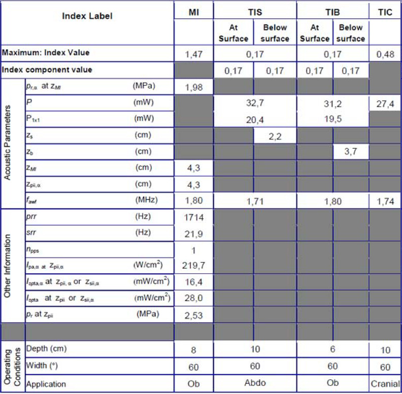
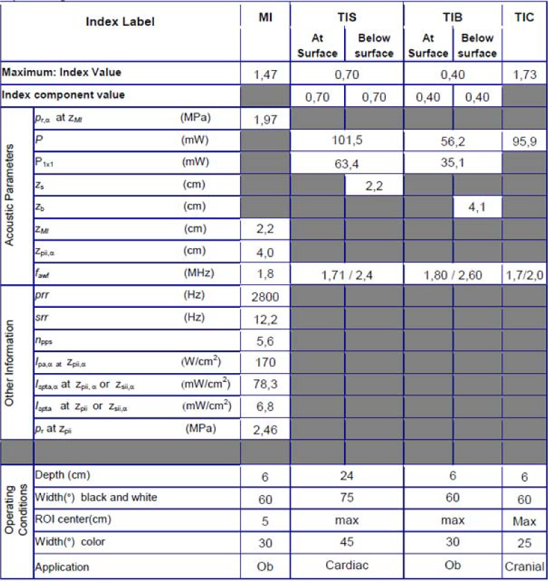
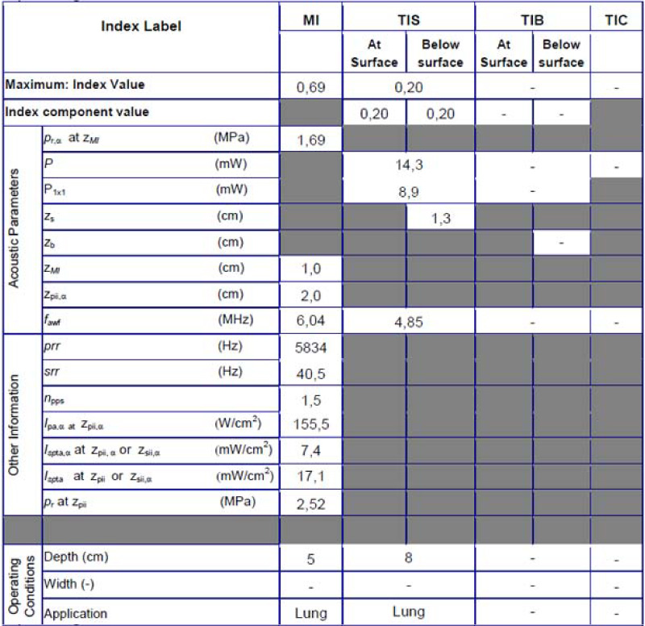
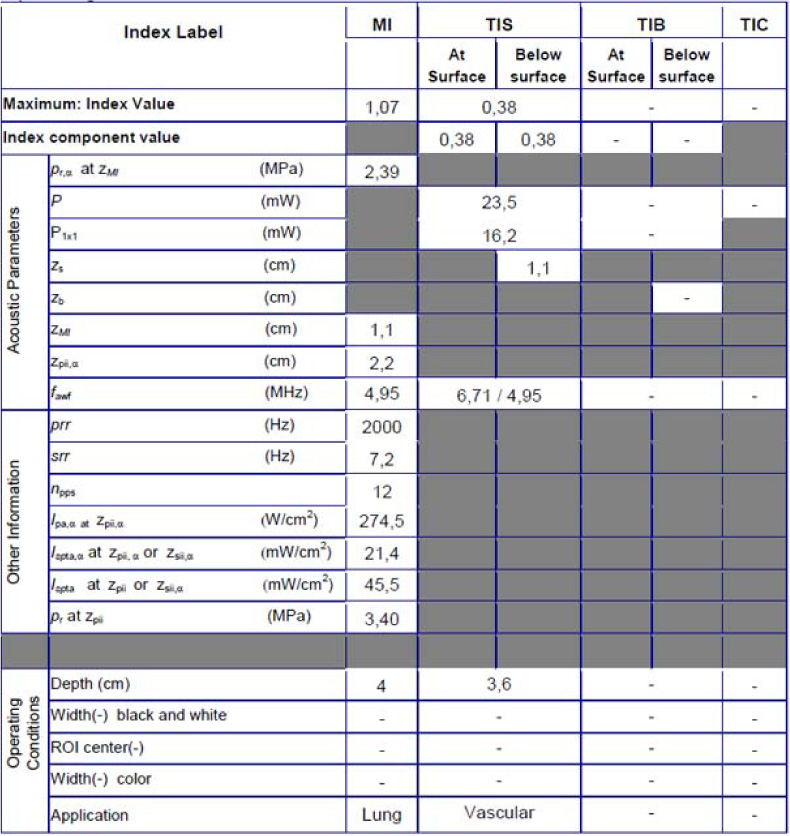
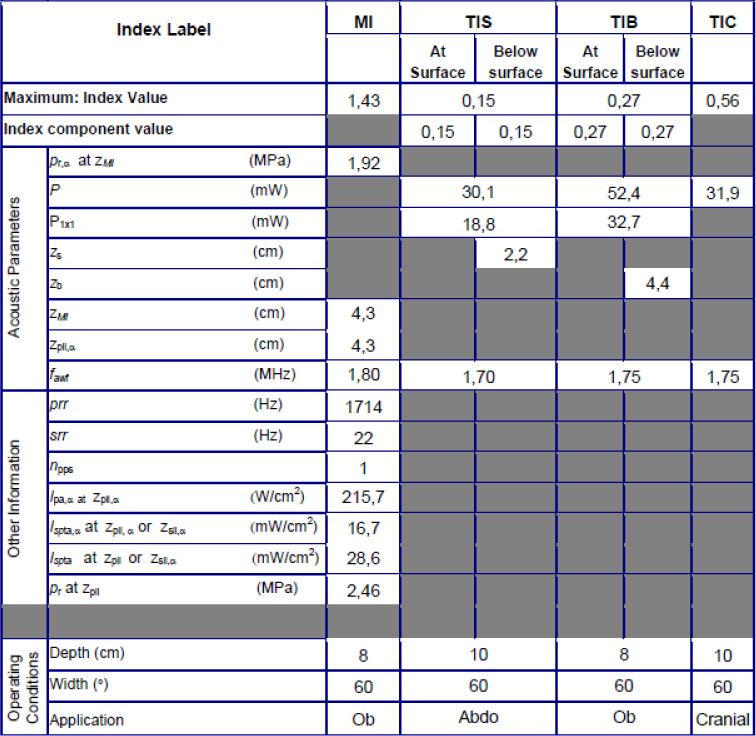
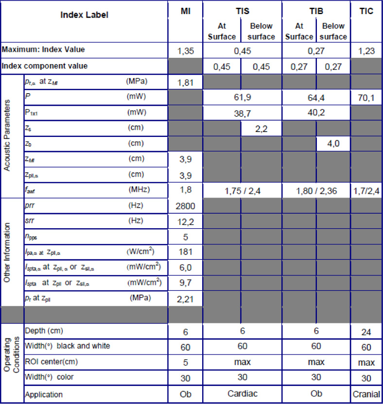

|
Contents: |
• Display unit (with battery, without probe): 168 x 76 x 22 mm, 321 gram • Display: 5 inches, 720 x 1280 pixels resolution • Sector probe: 129 x 32 x 25 mm, 85 gram • Dual Probe: 129 x 39 x 28 mm, 120 gram • Battery: 91 x 56 x 9 mm, 65 gram |
• Field-of-view for black and white imaging: up to 70 degrees with maximum depth of 24 cm • The color flow sector represents blood flow within an angle of 40 degrees. • Broad-bandwidth sector probe: from 1.7 to 3.8 MHz • Footprint: 13 x 19 mm |
• Field-of-view for black and white imaging: aperture width of 2.9 cm with maximum depth of 8 cm • The color flow sector represents blood flow over image with full aperture and entire depth. • Broad-bandwidth linear probe: from 3.3 to 8.0 MHz • Footprint: 9 x 35 mm |
The following definitions, symbols and abbreviations are used in the acoustic output reporting tables in this chapter: |
Table 7-1: Definitions, symbols and abbreviations
The mechanical and thermal indices may be replaced by one of the following footnotes because of the reasons listed: • a: Display of this index is not required for this operating mode. • b: This probe is not intended for transcranial or neonatal cephalic uses. If so, the table entries are replaced by a “#”, meaning: no data are provided for this operating condition since the maximum reported value is not reported for the reason listed. If neither an index or a footnote is given, this means that the index is irrelevant for this probe/mode combination. |
All table entries are with the operating conditions specified at the end of the table. |
Operating Mode: black/white

Figure 7-1. Phased array transducer - black/white
Operating Mode: black/white and color

Figure 7-2. Phased array transducer - black/white and color

Figure 7-3. Linear array transducer - black/white
Operating Mode: black/white and color

Figure 7-4. Linear array transducer - black/white and color

Figure 7-5. Phased array transducer - black/white
Sector probe
Phased array transducer G3S
Operating Mode: black/white and color

Figure 7-6. Phased array transduce - black/white and color
The following information is intended to provide guidance to the user in determining the amount of variation or measurement error that should be considered when performing clinical measurements with this equipment. Error can be contributed by equipment limitations and improper user technique. Be sure to follow all measurement instructions and develop uniform measurement techniques among all users to minimize the potential operator error. Also, in order to detect possible equipment malfunctions that could affect measurement accuracy, a quality assurance (QA) plan should be established for the equipment that includes routine accuracy checks with tissue mimicking phantoms. Please be advised that all distance and Doppler related measurements through tissue are dependent upon the propagation velocity of sound within the tissue. The propagation velocity usually varies with the type of tissue, but an average velocity for soft tissue is assumed. This equipment is designed for, and the accuracy statements listed on are based on, an assumed average velocity of 1540 m/s. The percent accuracy when stated applies to the measurement obtained (not the full scale range). Where the accuracy is stated as a percent with a fixed value, the expected inaccuracy is the greater of the two. |
Table 7-2: Measurement accuracy
Measurement |
Unit |
Useful range |
Accuracy |
Probe |
Distance |
||||
Axial |
cm |
Full screen |
±3% or ±1 mm, whichever is greater |
Both probes |
Lateral |
cm |
Full screen |
±5% or ±1 mm, whichever is greater |
Both probes |
The average value 1540 meters / second is used for all calculations. Depending on the tissue structures, this generalization may give errors from 2% (typical) to 5% (much fatty tissue layers present). |